Kailuo Wang
Cats Ecosystem Community Survey 2018 Results
technicalOverall we received 588 responses over the course of 30 days. This feedback is essential for us to make informed decisions on our 2019 plan. Thank you, everyone, who participated.
As promised, here are the results, as well as some quick reads from us.
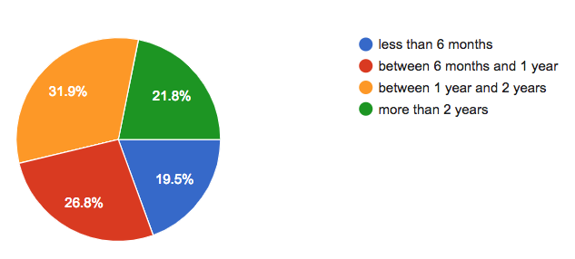
46% of the respondents are relatively new (less than 1 year) users. Welcome!
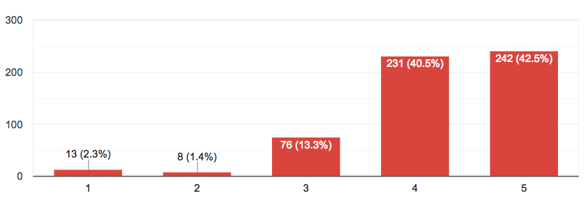
83% of users gave the 4+ ratings on the welcomeness of the community. This is a promising sign. We should aim for having more 5 ratings (currently at 42.5%) and fewer 3- ones.
We received 92 responses on this free-form question. The vast majority, 90+%, of them suggested that more documentation, tutorials, and real-world examples would help them feel more welcome. Some of them suggested that the learning curve could be less intimidating to them if there were more introductory resources.
The learning curve for Cats ecosystem libraries could be steep for people new to pure functional programming. This is by far the most impactful area for us to work on to be more inclusive.
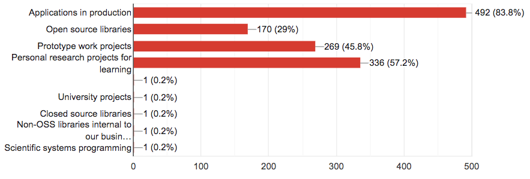
83% of respondents are using Cats ecosystem libraries in production applications. We are honored to have that trust. In the meantime, it's a great responsibility for us to maintain stability and robustness.
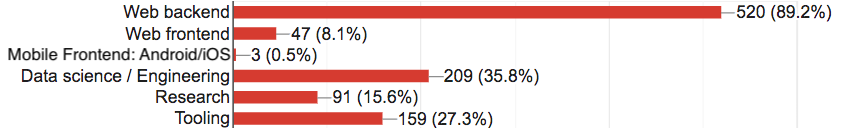
The free form other responses are omitted for the sake of conciseness.
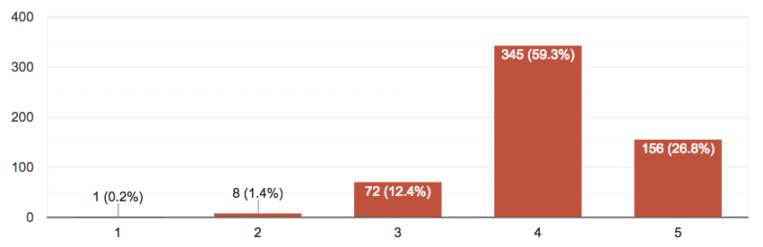
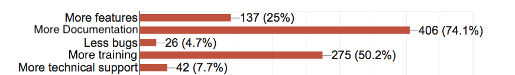
The free form other responses can be summarized as
1. better IDE support 10 (1.8%)
2. better imports 7 (1.3%)
3. better integration with other libs 3 (0.6%)
Overall the experience is mostly positive for our users. 73% of them believe there is space for improvements - they gave a rating less than 5. Again, more documentation and training will help most users. 25% of users are looking for more features.
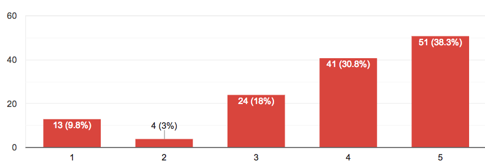
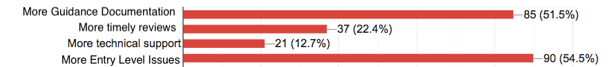
The contributing experience is good/okay but not really great. There is still a lot of work to be done here.

26% of our users still can't migrate to Scala 2.12 before second half of 2019.
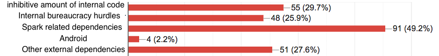
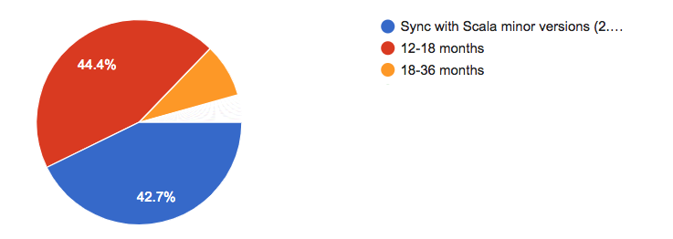
The community is split on this one. There are slightly more users that prefer a longer cadence (18-36 or in sync with Scala minor version) than those who prefer a shorter one (12-18 months).
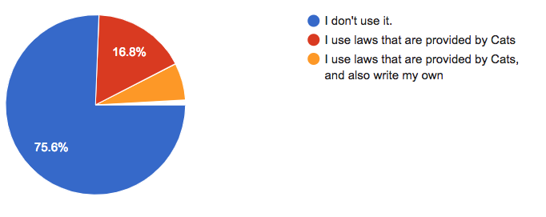
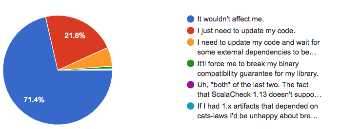
Breaking Cats-laws's backward compatibility might be blockers for roughly 6% of the users.
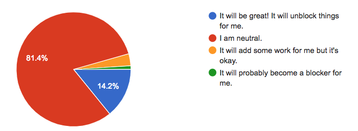
While most people are neutral on this one, there are significantly more users (14.2%) who would benefit from a Scalacheck 1.14 upgrade than those who would suffer (1%).
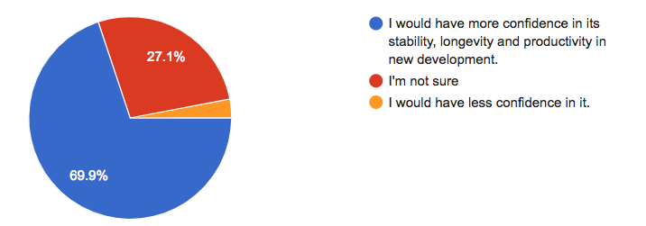
In regards to financially backed full-time or part-time maintainers, it would give more confidence to 69.9% users while reducing it for 3% of the users.
These concerns will be taken into consideration when we, if we decide to, design an institution to support paid maintainership.
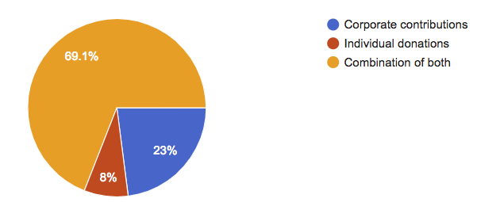
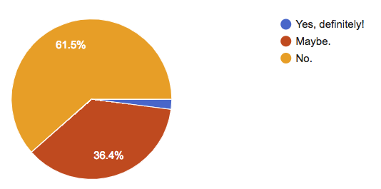
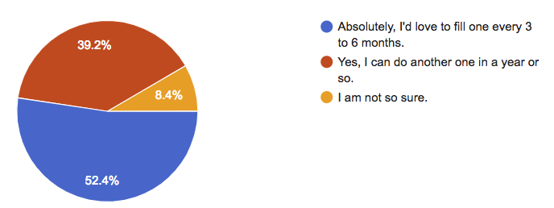
Overall we are encouraged by the survey responses from the community, in the meantime, they also showed us many areas to improve. Our 2019 planning will be based on these remarkably valuable feedbacks. We hope to present it to the community soon.
Kailuo Wang